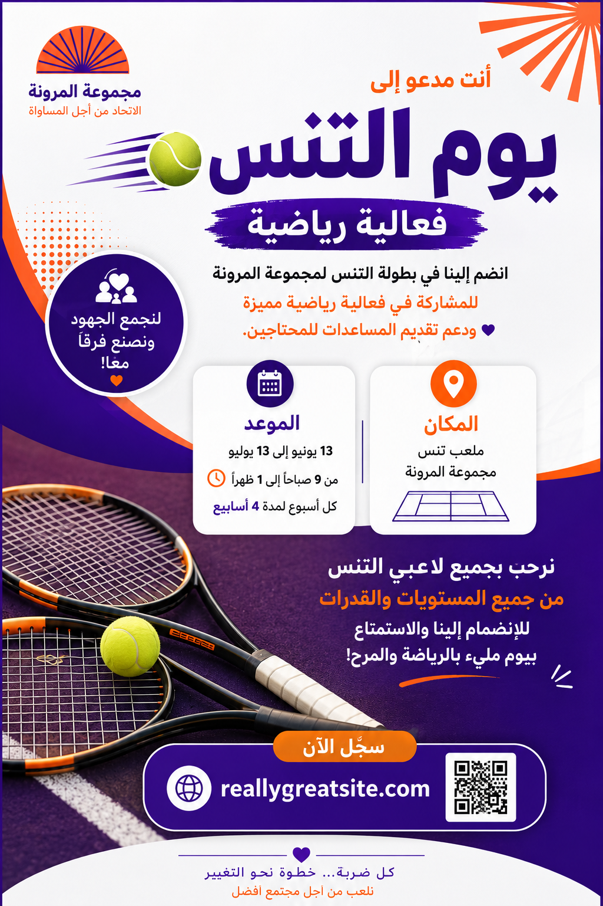

تحسين محتوى صورة باستخدام ChatGPT
من صورة إعلانية خام → تحديد الدور → تحليل المحتوى → تحسين النص → تصميم النتيجة النهائية
ChatGPT
خبير في تصميم المحتوى الإعلاني والتسويق البصري
Poster لفعالية رياضية
نص محسّن + تصور بصري جديد
🎯 الهدف من التاسك
استخدام ChatGPT بطريقة منظمة لتحليل Poster رياضي، استخراج النص، اكتشاف نقاط الضعف، تحسين الصياغة، اقتراح تطوير بصري، ثم إنتاج نسخة محسّنة تحافظ على فكرة الإعلان وهويته الأساسية.
🔄 Before / After
① الصورة الأصلية

② النتيجة الجديدة

🧠 الـPrompt المستخدم — النسخة الاحترافية
أنت خبير في تصميم المحتوى الإعلاني والتسويق البصري، ومتخصص في تحسين الـPosters والمنشورات الرقمية باللغة العربية.
سأرفق لك صورة Poster إعلاني لفعالية رياضية.
مهمتك هي:
1. تحليل الصورة بالكامل من حيث المحتوى، النصوص، التسلسل البصري، وضوح المعلومات، والعناصر التصميمية.
2. استخراج جميع النصوص الموجودة في الصورة كما هي، دون تعديل.
3. مراجعة النصوص واكتشاف الأخطاء اللغوية أو الأسلوبية إن وجدت.
4. إعادة صياغة النص ليصبح أكثر احترافية ووضوحًا وجاذبية للجمهور المستهدف، مع الحفاظ على فكرة الإعلان وجميع المعلومات الأساسية الموجودة في الصورة.
5. اقتراح عنوان رئيسي أكثر جذبًا إذا كان ذلك مناسبًا.
6. تحسين ترتيب المعلومات بحيث يستطيع القارئ فهم الإعلان بسرعة.
7. اقتراح تحسينات على التصميم، مثل ترتيب العناصر، أحجام العناوين، الألوان، المساحات، الصور، والأيقونات.
8. الحفاظ على الهوية البصرية الأساسية للإعلان وعدم تغيير فكرته بشكل جذري.
أريد أن تكون النتيجة منظمة بالشكل التالي:
أولًا: تحليل الصورة.
ثانيًا: النص الأصلي المستخرج من الصورة.
ثالثًا: الأخطاء أو نقاط الضعف الموجودة.
رابعًا: النص المحسّن المقترح.
خامسًا: التحسينات التصميمية المقترحة.
سادسًا: وصف مختصر لشكل الـPoster النهائي المقترح.
استخدم لغة عربية واضحة واحترافية، واجعل الاقتراحات عملية وقابلة للتنفيذ.📝 النص قبل التحسين
• مجموعة المرونة — الاتحاد من أجل المساواة.
• أنت مدعو إلى فعالية رياضية: يوم التنس.
• انضم إلينا في بطولة التنس لجمع الأموال لمجموعة المرونة لتقديم المساعدات بكل حب.
• الميعاد: 13 يونيو إلى 13 يوليو، من 9 ص إلى 1 م، كل أسبوع لمدة 4 أسابيع.
• المكان: ملعب تنس بمجموعة المرونة.
• نرحب بلاعبي التنس من جميع المستويات والقدرات للانضمام إلى المرح.
• للتسجيل: reallygreatsite.com
✨ النص بعد التحسين
أنت مدعو إلى
فعالية رياضية — يوم التنس
انضم إلينا في بطولة التنس لمجموعة المرونة للمشاركة ودعم تقديم المساعدات للمحتاجين.
الموعد: 13 يونيو إلى 13 يوليو — من 9 ص إلى 1 م — كل أسبوع لمدة 4 أسابيع.
المكان: ملعب تنس مجموعة المرونة.
نرحب بجميع لاعبي التنس من جميع المستويات والقدرات للانضمام والاستمتاع بيوم مليء بالرياضة والمرح!
التسجيل: reallygreatsite.com
🚀 أهم التحسينات
📌 الخلاصة
الصورة الأصلية → تحديد الدور → تحليل → استخراج → نقد → تحسين → تصميم النتيجة.
بهذا أصبح التاسك موثقًا كعملية كاملة توضح كيف يمكن استخدام ChatGPT بشكل احترافي، وليس مجرد طلب عام لتحسين صورة.